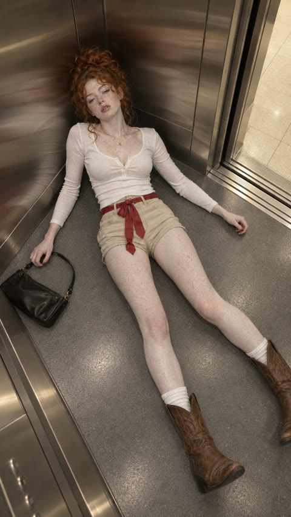
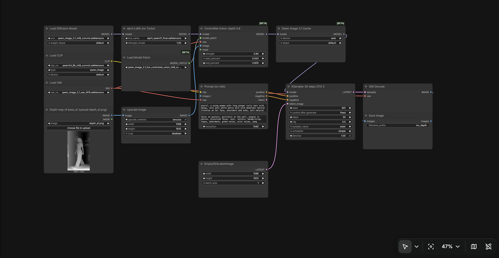
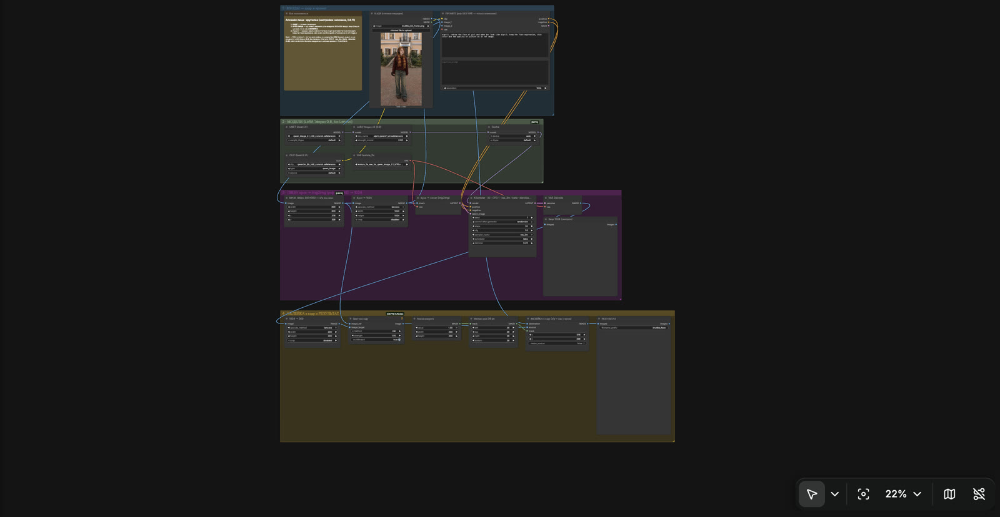
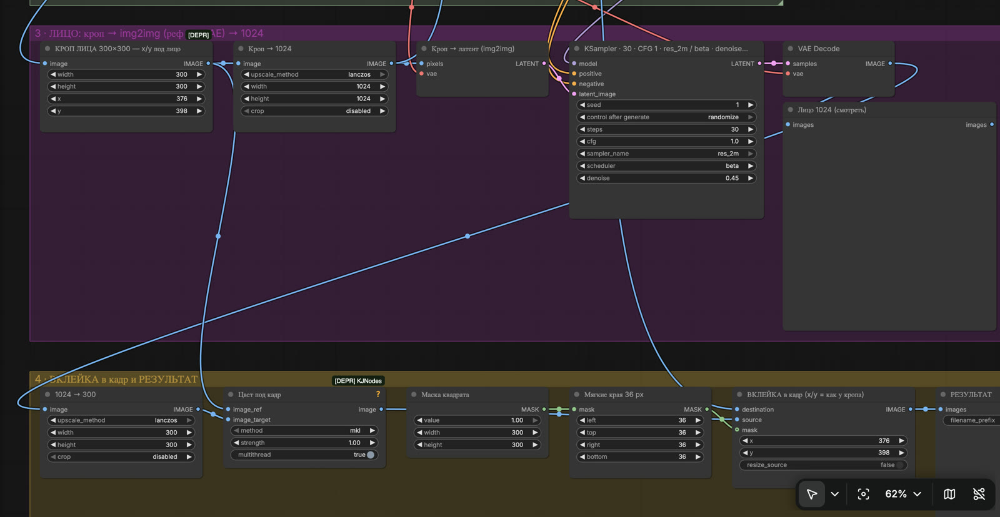
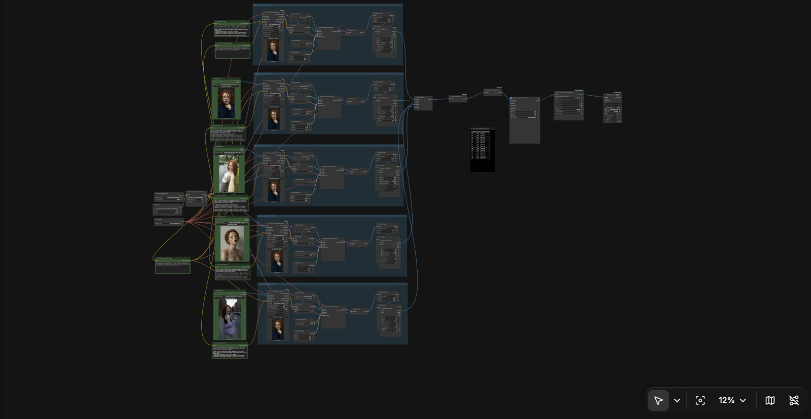
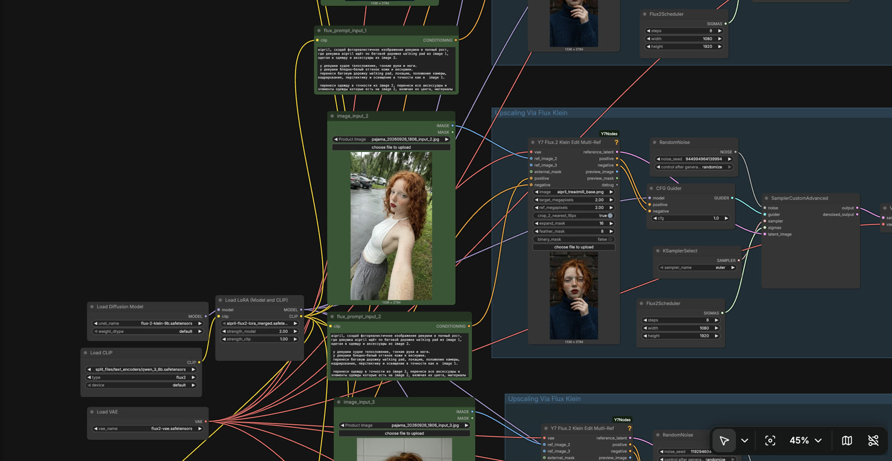
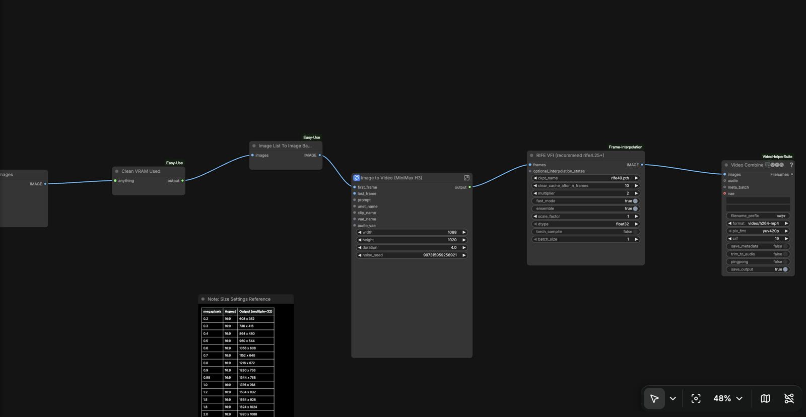
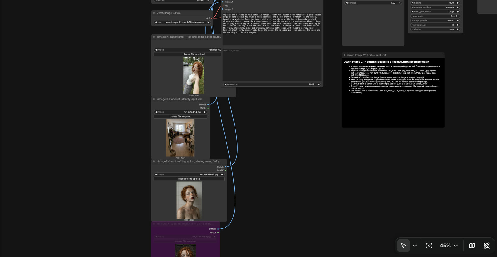

Никита
AI-креатор · реалистичный UGC-контент для брендов · AI-видео и фото
Делаю реалистичный AI-контент, который выглядит как снятый на телефон: UGC-рекламу, фэшн, липсинк, сюжетные ролики и тренды. Один и тот же персонаж узнаётся в каждом кадре. С ноября 2025 веду виртуальную блогершу Эйприл, у неё около 24 тыс. подписчиков в Instagram. С января по апрель 2026 делал для неё фэшн-кампании, коллабы, заказы брендов и липсинки.
«Живу нейросетями. Цель — построить что-то большое».
Реалистичный UGC-контент для брендов
Реклама, которая не выглядит рекламой: человек сам показывает товар, носит его, говорит о нём в камеру. Без студийного глянца, с живой камерой телефона и естественным светом.
Форма, цвет и логотип совпадают с оригиналом. Товар идёт отдельным референсом, поэтому его не перерисовывает модель.
Отзыв, обзор или распаковка от лица персонажа: липсинк, голос под кадр, взгляд в камеру.
Одежда на персонаже в разных позах и местах, крой и ткань держатся во всех кадрах.
Первые 2 секунды цепляют, дальше короткая история вокруг товара. Вертикальный монтаж, готовый к публикации.
Повторяю тренд Reels и TikTok с персонажем и товаром, без фильтров поверх чужого видео.
Из одного удачного ролика делаю серию: новые хуки, форматы, персонажи, места. Удобно для тестов рекламы.
Гиперреалистичная история
Включите звук.
Короткие ролики
Тренд из Reels повторён без исходного видео: каждый кадр и движение сгенерированы заново.
Один персонаж, одна комната, серия образов. Лицо, одежда и поза — отдельными референсами.
Реальные локации Минска, вид как с камеры телефона, одно лицо во всех кадрах.
Склейки попадают в бит и в шаги.
Здесь ролики на моём собственном стеке. Работы января–апреля сделаны на прошлом поколении моделей, поэтому их не показываю. Готов сделать тестовый ролик по вашему брифу.
С чем работаю
Как получаю хороший кадр
- Структура промпта. Кто → что делает → крупность и объектив → движение камеры → свет → фактура и плёнка → что не должно меняться. Для видео расписываю по секундам: «[0–2 с] двери открываются… [2–4 с] закрываются полностью».
- Референсы по ролям. Лицо, одежда, место, поза и товар — отдельными референсами, а в промпте сказано, какой за что отвечает. Лист персонажа с 3 ракурсами держит одного человека во всех шотах.
- Первый и последний кадр. Для переходов и эффектов генерирую первый и последний кадр, а Seedance анимирует движение между ними.
- 3D-референс камеры. Для сложного пролёта собираю простую 3D-сцену (её строит Claude), рендерю путь камеры и даю Seedance 2.5 как референс движения.
- Черновики дёшево, финал чисто. Итерации в низком разрешении, финальный проход в 720p/1080p. Бюджет уходит только на удачные шоты.
- Проверка перед сдачей. Руки, размер головы, направление света, фактура кожи, текст на вывесках, синхрон губ. Брак до клиента не доходит.
Больше 3 лет в монтаже
Монтирую больше трёх лет, в том числе коммерческие проекты. Генерация — половина ролика, вторая половина — ритм, склейки и звук.
Premiere Pro, After Effects, DaVinci Resolve: склейка, моушн, цветокоррекция, звук. Коммерческие заказы.
Освоил монтаж через ИИ-агентов в Remotion и HyperFrames: ролик собирается кодом, правка — это новая итерация за минуты, а не ручная пересборка таймлайна.
Могу собрать пайплайн, который сам качественно монтирует ролики определённого формата: склейки под бит, титры, звук, вертикаль. Новый материал на вход — готовый ролик в едином стиле на выходе.
От брифа до готового ролика
Бриф
вопросы до стартаФормат, настроение, референсы, что должно совпасть точно: товар, одежда, лицо.
Ключевые кадры
сначала картинкиКлючевые кадры на согласование до генерации видео. Так правки дешёвые.
Видео и монтаж
Seedance · Kling · VeoАнимация, звук, монтаж в нужном формате.
Правки
быстроПравки по комментариям, потом вариации лучшей версии: новые хуки, форматы, персонажи.
Персонаж узнаётся в каждом кадре



датасет → обучение →


Конвейер: от идеи до поста без рук
Каждый шаг — отдельный модуль. Шаги передают друг другу файлы и проходят гейты, поэтому сбой виден сразу и не доходит до публикации.
Сюжет
Claude · дневник персонажаАгент ведёт жизнь Эйприл и решает, что снимать сегодня: образ, место, действие.
Референсы
Pinterest · OpenCLI · своя библиотекаНаходит рефы одежды, мест и поз, кадрирует и добавляет в задачу.
Облачный GPU
RunPod APIАрендует подходящий GPU, ставит ComfyUI, ноды и веса с HuggingFace, следит за простоем и лимитами.
Кадры
ComfyUI · Qwen-Image 2.1 / Fibo 2 + LoRAПакетно, с ControlNet и мультирефом; апскейл лица отдельным графом.
Видео
ComfyUI · MiniMax H3 i2v / ref2vКлип со звуком из кадра, интерполяция RIFE, ускорение SageAttention.
Проверка
Python-гейтыАвтопроверка: артефакты, лицо, размер, длительность. Брак дальше не идёт.
Монтаж
Remotion / HyperFrames · анализ позы и музыкиПодбор трека, нарезка в бит, текст и субтитры.
Публикация
Upload-Post · Telegram-ботПост в соцсети и отчёт в Telegram: что вышло, что упало и почему.
Мои воркфлоу
Скрины из живого ComfyUI. Нажмите на картинку, чтобы увеличить.
Стек LoRA: персонаж на локации


Моя LoRA + LoRA стиля камеры; локация приходит рефом.
ControlNet depth: персонаж в локации


Глубина сцены держит геометрию места, LoRA держит лицо.
ControlNet pose: портрет по позе


Поза по скелету, сэмплинг в два этапа.
Апскейл лица по маске


Лицо вырезается, перерисовывается с LoRA и вклеивается обратно без шва.
Ref → video: 4 рефа в клип со звуком


Лицо, образ, поза и место — отдельными рефами.
Беговая дорожка: 5 цепочек кадр → видео в одном графе



5 промптов идут по цепочке «промпт → кадр → видео»; на выходе 5 готовых клипов.
Image → video со звуком и ускорением


Ускорение на 4090/5090 без потери качества.
Редактирование по нескольким рефам


Замена IP-Adapter: лицо, одежда и место идут в текстовый энкодер картинками.
Какие сервисы связал
Поиск рефов
- Агент пишет запрос
OpenCLI → Pinterestсобирает выдачу- Фильтр и кадрирование на Python
- Загрузка во вход ComfyUI
Генерация в облаке
RunPod REST: выбор GPU, ретраи, потолок цены- Веса с
HuggingFace/Civitai ComfyUI /prompt→/history→ скачивание- Под удаляется после работы
Тексты и сценарии
Claudeв ролях: сценарист, генерация, монтажOpenRouter/Geminiдля разовых задач- Результат проверяют гейты
Публикация и связь
Upload-Post/Zernioпубликуют роликTelegram Bot API: отчёты и кнопки решений- Сбор комментариев и статистики
Код под капотом
ComfyUI API, RunPod, графы
рефы, комментарии, статистика
поза, шаги, ритм музыки
оркестратор, расписание, гейты
отчёты бота
публикация
# comfy_client.py — поставить граф в очередь ComfyUI и дождаться результата def queue(url, graph): r = requests.post(f"{url}/prompt", json={"prompt": graph, "client_id": str(uuid.uuid4())}, timeout=30) data = r.json() if data.get("error") or data.get("node_errors"): raise RuntimeError(f"ComfyUI error: {data}") return data["prompt_id"] def wait(url, prompt_id, timeout, interval=5): start = last_contact = time.time() while time.time() - start < timeout: job = poll_history(url, prompt_id) if job: last_contact = time.time() if time.time() - last_contact > UNREACHABLE_AFTER: raise RuntimeError("pod stopped or crashed") if job and job["status"].get("status_str") == "error": raise RuntimeError(error_details(job)) # какая нода упала и почему if job and job["status"].get("completed"): return job time.sleep(interval)